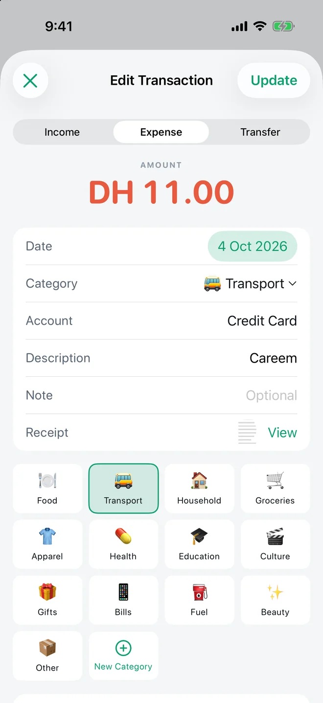

FEATURE · CURRENCIES · FREE
Spend in any currency. Read one total.
TrackExpenses records each transaction in the currency you paid in, with the exchange rate you choose, and converts every total, budget and account balance into one main currency — so a trip abroad doesn’t break your month.


Real app screens with example records.
How it works
- Pick a main currency under More → Main Currency. Every total is reported in it.
- Add the currencies you use under More → Additional Currencies.
- Log in the currency you paid. The entry sheet asks for the rate to your main currency and prefills the last rate you used for that currency.
Accounts can hold money in their own currency, such as a USD travel account. The Accounts screen converts each balance into your main currency using the rate each entry was made at, and says so on screen.
Why your own rate
TrackExpenses doesn't fetch live rates from the internet. The rate your bank or card actually charged is the true one, and it often differs from a market rate. A foreign entry can't be saved without a rate, because saving it at 1 would quietly distort that currency's history.
Built for
- Travel spending in several countries.
- Expats paid in one currency and sending money home in another.
- Bank alerts in foreign currencies: imported purchases wait for their rate instead of guessing.
Questions
Does TrackExpenses update exchange rates automatically?
No. You enter the rate, prefilled from the last one you used for that currency. This keeps the figures equal to what your bank actually charged.
Is multi-currency a Pro feature?
No. Main and additional currencies are part of the free ledger.
Your money, easier to follow.
Expense Tracker: SMS & Voice for iPhone and iPad.
No ratings yet in the US App Store · Checked 2026-10-05
App facts and free / Pro limits
Expense Tracker: SMS & Voice (TrackExpenses) is made by Mohamed Elatabany for iPhone and iPad with iOS/iPadOS 17 or later. The interface is English. No app account or bank login is required. Optional Shortcuts automations import supported bank SMS and Wallet purchases; the app does not read your Messages inbox. Voice entry creates on-device drafts on compatible devices and languages and requires Pro. The free ledger includes unlimited manual transactions, budgets, historical stats, search, monthly CSV export, private iCloud sync, 3 accounts, 3 recurring rules and 20 successful automatic bank SMS imports per calendar month per device. Pro adds unlimited SMS imports, accounts and recurring rules, forecasts, daily budget guidance, what-if planning, voice entry, CSV import, date-range CSV exports, full JSON backup and restore, themes and alternate icons. Monthly and annual subscriptions and a one-time lifetime purchase are available. Spending calculations depend on your records and are not financial advice.